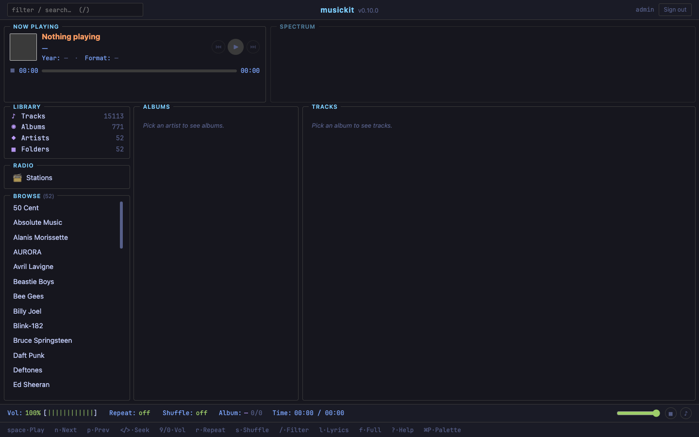
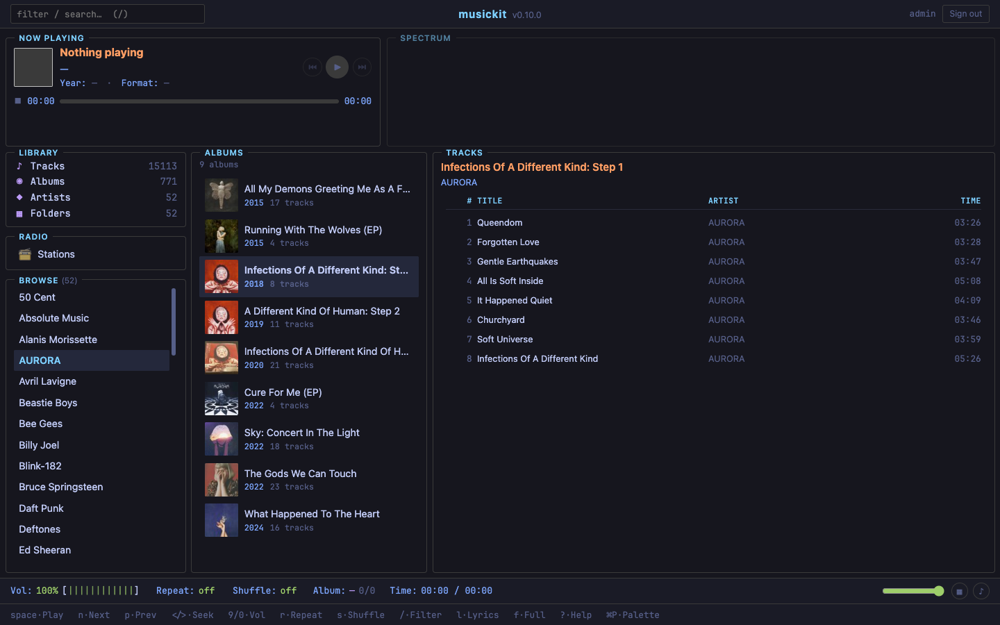
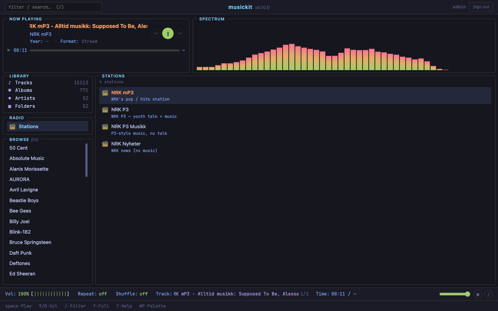
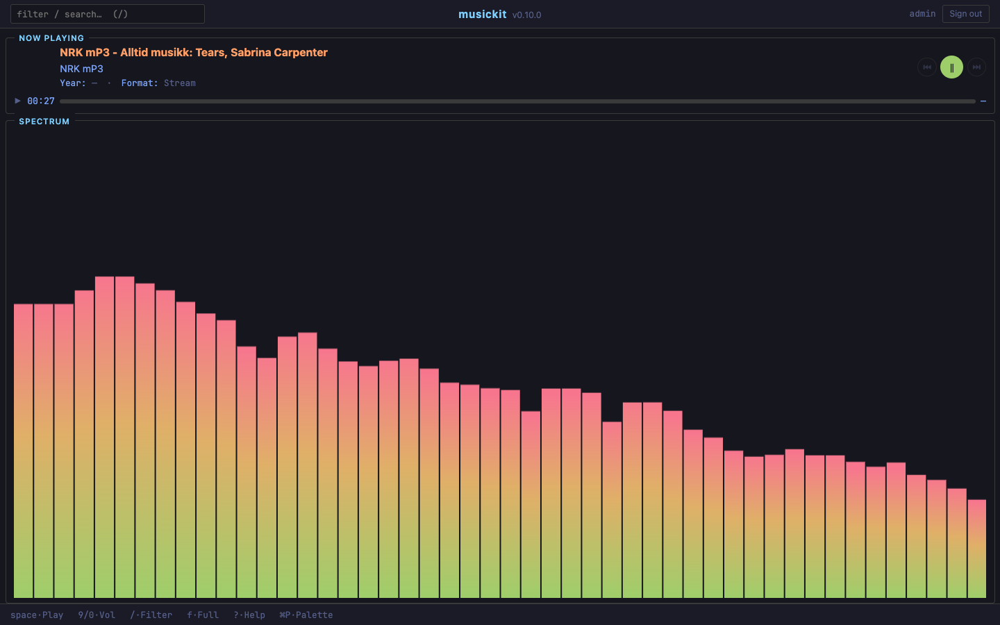
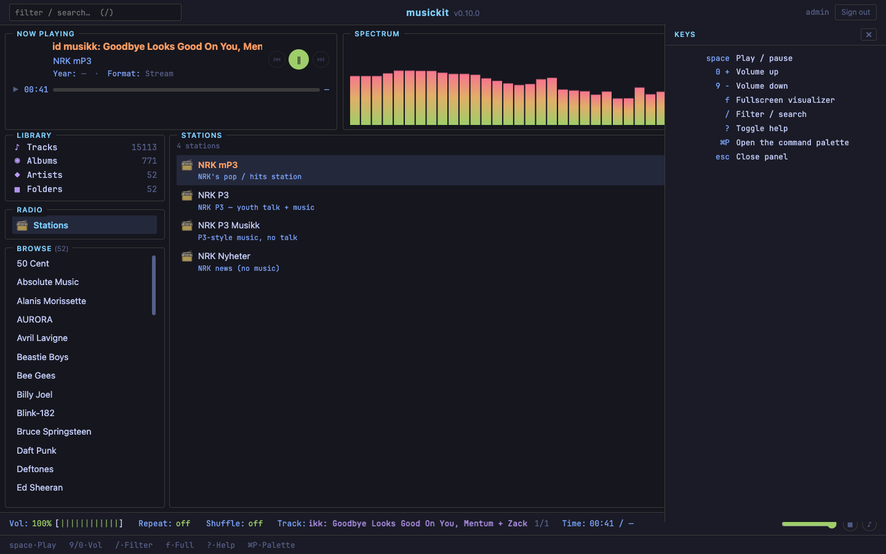
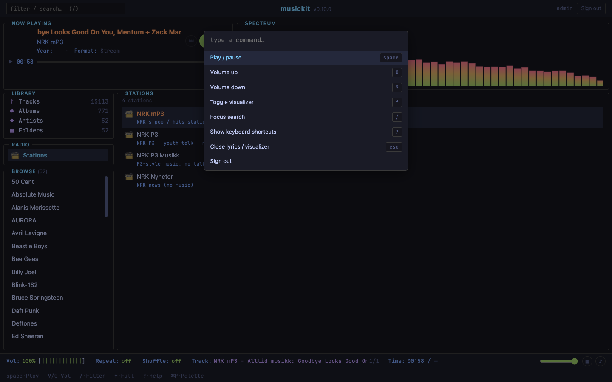

musickit serve¶
A Subsonic-compatible HTTP server. Any modern Subsonic client (Symfonium, Amperfy, play:Sub, Feishin, Supersonic, DSub) connects, browses, searches, streams, and seeks. Works equally well over LAN and over Tailscale.
uvx musickit serve TARGET_DIR [--host H] [--port P] [--user U] [--password P] [--no-mdns] [--no-watch] [--no-cache] [--full-rescan] [--no-web]
TARGET_DIR is required. --host 0.0.0.0, --port 4533, credentials default to admin/admin with a yellow warning. --no-cache skips the persistent SQLite index at <TARGET_DIR>/.musickit/index.db; --full-rescan rebuilds it from scratch on startup. See musickit library index for index management.
Startup banner¶
musickit serve — Subsonic API for ~/Music
bind: 0.0.0.0:4533
LAN: http://192.168.1.42:4533
Tailscale: http://my-mac.tail-scale.ts.net:4533
scanning library…
⠹ Scanning library · 02 - Phenomenon 100/870 ━━━━╸ • 0:00:08
142 artists, 318 albums, 4521 tracks
mDNS: advertising as musickit-mlaptop._subsonic._tcp.local
watching ~/Music for changes (auto-rescan on add/remove/rename)
The banner gives you everything you need to point a client at the right URL, and tells you which auto-features are active (mDNS + filesystem watcher).
Why --host 0.0.0.0 is the default¶
Unlike most "self-hosted" services, the default is to bind all interfaces, NOT loopback. Reason: Tailscale assigns each machine a 100.x.x.x IP that's unreachable from 127.0.0.1. Binding loopback would make Tailscale access impossible — defeating the whole point.
Auth is mandatory (admin/admin if you don't override), so the binding is safe even on a public Wi-Fi network. If you really want LAN-blind for some reason:
Tailscale walkthrough¶
The 3-step setup:
tailscale upon the machine runningserve.- Read the URL from the startup banner (
http://my-mac.tail-scale.ts.net:4533) — or runtailscale ip -4to get the raw IP. - In your Subsonic client (Symfonium / Amperfy / Feishin), add a server with that URL + the user/password you set.
That's it. No port forwarding, no HTTPS to set up, no DDNS — Tailscale's WireGuard tunnel handles encryption end-to-end. Reachable from anywhere on your tailnet, anywhere in the world. This was the whole point of binding 0.0.0.0.
If you don't use Tailscale, the LAN URL works the same way for any device on your local network.
Recommended clients (2026)¶
The original subsonic.org is dead/abandoned/paid; the actively-maintained client ecosystem orbits Navidrome's superset (the OpenSubsonic spec). Tested-against-MusicKit clients:
iOS
- Amperfy — FOSS, frequent updates, App Store free
- play:Sub — paid, very polished
- Substreamer — free with IAP, modern
Android
- Symfonium — paid one-time (~€8), arguably the best music client on Android right now
- Tempo — FOSS / F-Droid, active
- Ultrasonic — FOSS / F-Droid, active
Desktop
- Feishin — Electron, modern UI
- Supersonic — native Go/Fyne, active
The MusicKit project also runs as a client itself — musickit tui --subsonic URL connects to the same API. See TUI for that.
Endpoints implemented¶
All under /rest/. Every endpoint accepts both GET and POST (some clients prefer one or the other) plus HEAD (play:Sub uses it for Content-Length probing).
System¶
| Endpoint | Returns |
|---|---|
ping |
OK + auth check |
getLicense |
Always-valid license stub (Subsonic was paid; clients still check this) |
getMusicFolders |
Single Library folder |
getOpenSubsonicExtensions |
Empty list (we don't claim extensions yet) |
Browsing (modern, ID3-based)¶
| Endpoint | Returns |
|---|---|
getArtists |
Alphabetically grouped artist list |
getArtist?id= |
Albums for one artist, ordered by year |
getAlbum?id= |
Album with its tracks |
getAlbumList2?type=&size=&offset= |
Flat album list. Types: alphabeticalByName, alphabeticalByArtist, random, byYear (with fromYear/toYear), byGenre. Other types fall back to alphabetical. |
getSong?id= |
One track |
getRandomSongs?size=&fromYear=&toYear= |
Random track sample |
Browsing (legacy, folder-based)¶
| Endpoint | Returns |
|---|---|
getIndexes |
Alphabetically grouped artist list (legacy envelope shape) |
getMusicDirectory?id= |
Routes by ID prefix: ar_* → child albums, al_* → child songs |
Search¶
| Endpoint | Returns |
|---|---|
search3?query=&artistCount=&albumCount=&songCount= |
FTS5-backed multi-token AND with prefix matching, diacritic folding, and bm25 ranking. Sub-ms on 23k-track libraries. bey matches Beyoncé; abba 1976 matches the 1976 ABBA album by combining the title + album_artist + year body text. Pagination via *Offset. Falls back to a casefolded substring scan if SQLite was built without FTS5 (rare). |
search2?query=... |
Same matching, legacy searchResult2 envelope key |
Media¶
| Endpoint | Returns |
|---|---|
stream?id= |
Audio bytes via FileResponse with Accept-Ranges: bytes. Supports HTTP Range. |
stream?id=&format=raw |
Explicit no-transcode |
stream?id=&format=mp3 |
Transcode via ffmpeg → MP3 (default 192k) |
stream?id=&maxBitRate=128 |
Cap delivered bitrate (transcodes to MP3 at that rate) |
download?id= |
Always raw bytes — ignores format/maxBitRate per spec |
getCoverArt?id=&size= |
Cover image. Sidecar (cover.jpg/folder.jpg/front.jpg) first, embedded picture as fallback. Optional Pillow resize via ?size=N (capped at 1500). Response bytes cached in a bytes-bounded LRU (default 64 MiB) keyed on (id, size); cleared on every reindex so re-cover-picked albums never serve stale bytes. |
Library control¶
| Endpoint | Returns |
|---|---|
startScan |
Kick a background rescan. Sets scanning=true synchronously so a poll right after never sees scanning=false. |
getScanStatus |
Poll the rescan state |
Users / preferences¶
| Endpoint | Returns |
|---|---|
getUser?username= |
Single configured user with all roles enabled |
getUsers |
List of one user |
No-op stubs¶
These are stubs to keep clients quiet on features we don't track yet. They return well-formed empty responses or accept-and-discard.
| Endpoint | Behaviour |
|---|---|
scrobble |
Forward play events to webhook + MQTT (see Scrobble forwarder) — or accept-and-discard when nothing is configured. |
getArtistInfo / getArtistInfo2 |
Empty bio + similarArtist[] |
getStarred / getStarred2 |
Real. Backed by <root>/.musickit/stars.toml. Returns artists / albums / songs flagged via /star, sorted most-recent-first. Stale IDs (file deleted since starring) are silently filtered out — call StarStore.prune(...) to remove them from the file. |
star / unstar |
Real. Adds / removes IDs in stars.toml. Accepts any combination of id=, albumId=, artistId=. Unknown IDs are silently dropped. |
getPlaylists / getPlaylist |
Empty playlist list |
getGenres |
Real! Counts songs + distinct albums per genre. |
Lyrics¶
| Endpoint | Returns |
|---|---|
getLyrics?artist=&title= |
Legacy fuzzy lookup. Returns {artist, title, value}; empty value when no match (per spec — clients show "no lyrics available"). |
getLyricsBySongId?id= |
OpenSubsonic structured shape. When the stored body looks like LRC ([mm:ss.xx] markers), promotes to synced: true with [{start: ms, value: line}, ...] — Symfonium and Amperfy display the highlight tracking real time. Otherwise returns synced: false with one line per text line. |
Lyrics are sourced from a <track>.lrc sidecar (preferred) or the file's embedded \xa9lyr / USLT / LYRICS tag. Populate sidecars in bulk with musickit library lyrics fetch — pulls from LRCLIB, writes per-track .lrc files. Synced lyrics light up automatically the next time the server's index gets reloaded.
Internet radio¶
| Endpoint | Returns |
|---|---|
getInternetRadioStations |
Stations from radio.load_stations() — baked-in defaults plus user entries from ~/.config/musickit/radio.toml. Same source the TUI uses; the web UI renders the same list. Symfonium / Amperfy / play:Sub pick this up automatically. |
createInternetRadioStation / updateInternetRadioStation / deleteInternetRadioStation |
Success-no-op. Stations are managed by editing radio.toml directly, not via the API. |
Persistent stars (since v0.7.0)¶
Heart / star buttons in Subsonic clients (Symfonium, Amperfy, Feishin, play:Sub) are now real — toggling one persists in <root>/.musickit/stars.toml and survives server restarts, schema bumps, and library index drop. The file is plain TOML, hand-editable:
[items]
"tr_xxxxxxxxxxxxxxxx" = "2026-05-05T10:30:00Z"
"al_yyyyyyyyyyyyyyyy" = "2026-05-05T10:31:15Z"
"ar_zzzzzzzzzzzzzzzz" = "2026-05-05T10:32:42Z"
Stars live OUTSIDE the SQLite library index because the index is fully derived from the filesystem (delete / rebuild = safe), but stars are real user data. Both files sit under .musickit/ so rm -rf <root>/.musickit/index.db* is still a safe "rebuild the cache, keep my favourites" operation.
Browser UI¶
Open the server URL in any browser to use the bundled web player. The visual language tracks the TUI's widgets.py exactly — bordered panels with floating titles, the same palette (cyan headers / blue labels / green for playing / orange for the active track), monospace numerics, slim "round 30%"-style scrollbars, ncmpcpp-style KeyBar.
http://<host>:4533/login → sign-in form (same creds as the Subsonic API)
http://<host>:4533/web → three-pane browser

Click an artist in the left Browse pane to see albums, click an album to see tracks, click a track to start playing. Now Playing card (top-left) shows the active title / artist / album / cover; the Spectrum panel (top-right) is a 48-band FFT bar visualizer driven by the Web Audio API.

Internet radio lives in the same sidebar. Click the Radio panel's Stations entry to load /web/radio — the list comes from getInternetRadioStations, which is backed by radio.load_stations() (defaults + ~/.config/musickit/radio.toml). The grid collapses to two columns in radio mode, the active station gets the orange is-playing highlight, and the Now Playing title flips to the current ICY StreamTitle once the proxy parses one (see below).

Press f to fullscreen the Spectrum visualizer. The Now Playing card stays visible at the top, the panes hide, the bars take the rest of the viewport. Press f again to return.

Press ? for a slide-in keys panel; Cmd/Ctrl+P opens a Textual-style command palette. Both filter their contents by the current playback mode — the help and palette below were captured while a radio stream was playing, so Next / Prev / Seek / Repeat / Shuffle / Lyrics are absent (they don't apply to a live stream).


The UI is hand-rolled vanilla JS + CSS — no bundler, no third-party JS, no build step. Reads the same /rest/getArtists / /rest/getArtist / /rest/getAlbum endpoints the rest of the API uses; track playback hits /rest/stream, radio playback hits /web/radio-stream (a same-origin proxy that strips ICY metadata frames so the Web Audio visualizer keeps working). Login sets a signed session cookie so <audio src="/rest/stream?id=..."> doesn't have to leak the password into HTML.
Existing Subsonic clients (Symfonium, Amperfy, Feishin, play:Sub) keep using ?u=&p= query params and never see the cookie path — they're untouched by this addition.
Disable the web UI with --no-web. With the flag, /login, /web, and /web-static/* are not mounted — / returns the JSON probe to browsers as well as Subsonic clients. The /rest/* API stays fully available. Useful when you only want the Subsonic surface on a host (smaller attack area) or running headless on an embedded box where nobody hits the URL in a browser.
Keybinds:
| Key | Action |
|---|---|
| Space | Play / pause |
n / p |
Next / previous track in the current album queue |
< / > |
Seek backward / forward 5s |
9 / 0 |
Volume down / up |
r |
Cycle repeat (off / album / track) |
s |
Toggle shuffle |
l |
Toggle the lyrics panel (synced highlight when LRC is available) |
f |
Toggle the FFT visualizer (Web Audio API + Canvas) |
/ |
Focus the search bar |
? |
Show keyboard shortcuts (slide-in panel) |
| Cmd / Ctrl + P | Command palette |
| Esc | Close lyrics / visualizer / blur search |
Sidebar Radio panel — clicking it loads /web/radio, which lists the same stations the TUI plays (defaults + ~/.config/musickit/radio.toml). Click a station to start streaming via <audio>; the visualizer keeps working over the live stream.
Search uses the same FTS5 index /search3 does (sub-ms ranked, prefix-matching, diacritic-folded — bey finds Beyoncé). Results swap into the right pane as artist / album / track sections; click any result to drill in or play.
Cover art thumbnails appear in album rows + the now-playing card; sourced from /rest/getCoverArt with the LRU cache from v0.9.1.
Queue is the visible album. Click a track → play from there; auto-advance through remaining tracks; n/p step. (Cross-album queueing comes later.)
FFT visualizer runs entirely in the browser via the Web Audio API: a MediaElementAudioSourceNode tees the <audio> element into an AnalyserNode, the JS averages the FFT into 48 log-spaced bands (30Hz to 16kHz), and renders bars to a <canvas> at 60fps with red/yellow/green VU gradient — same palette as the TUI. Asymmetric attack/release smoothing so transients pop while sustained tones don't shimmer.
Follow-ups not yet shipped: custom queue / "play next", playlist creation in the browser.
Authentication¶
Three forms supported, all per the Subsonic spec:
- Plain:
?u=user&p=password enc:plain:?u=user&p=enc:7365637265 74(some clients send this to avoid logging plain passwords)- Salted token:
?u=user&t=<md5(password+salt)>&s=<salt>— the modern recommendation
POST requests can put credentials in the form body (application/x-www-form-urlencoded); a middleware merges those into the query string before auth runs. play:Sub uses this; without the middleware they'd 401.
The HTTP Authorization: Basic ... header is not read. If your client has a "Basic Auth" toggle, leave it off.
Response format¶
Spec default is XML; ?f=json opts into JSON. We honour both via a middleware that re-serialises the underlying dict per request. Most modern clients (Symfonium, Feishin, the MusicKit TUI) send f=json; older / iOS clients (Amperfy, play:Sub) often don't and get XML.
Configuration¶
Override per-run via --user / --password; or via env vars (MUSICKIT_SERVER__USERNAME, MUSICKIT_SERVER__PASSWORD). Resolution order: CLI flags > env vars > TOML > admin/admin default (with a yellow warning printed for the default).
Run musickit config show to print the resolved config (sensitive values masked) and musickit config path to find the file.
Migrating from serve.toml (pre-v0.11): the old ~/.config/musickit/serve.toml is still read transparently. Run musickit config migrate once to move it to the new format and drop the deprecation hint.
Scrobble forwarder¶
Subsonic clients (Symfonium, Amperfy, Feishin, play:Sub) call /scrobble after every track. By default that's a no-op. Add a [server.scrobble.webhook] and/or [server.scrobble.mqtt] block to forward each play event:
# ~/.config/musickit/musickit.toml
[server.scrobble.webhook]
url = "https://my-bridge.example.com/play"
secret = "shh" # optional — sent as `X-Musickit-Secret` header
timeout_s = 5.0 # optional — defaults to 5s
[server.scrobble.mqtt]
broker = "mqtt://homeassistant.local:1883"
topic = "musickit/scrobble" # default shown
username = "musickit" # optional
password = "supersecret" # optional
client_id = "musickit" # optional
# Optional: forward `submission=false` ("now playing") probes too.
# Default false — Home Assistant "currently playing" automations want true.
[server.scrobble]
include_now_playing = false
Each event is JSON like:
{
"user": "mort",
"track_id": "tr_abc123",
"title": "Levitating",
"artist": "Dua Lipa",
"album": "Future Nostalgia",
"duration_s": 203.0,
"played_at": "2026-05-06T18:42:11Z",
"submission": true
}
Forwarding is fire-and-forget on a small thread pool; webhook + MQTT failures are logged at WARNING and swallowed so a dead bridge never 500s the client's /scrobble request. MQTT is optional — the dispatcher lazy-imports paho-mqtt; missing the dep just disables the MQTT half.
Common destinations:
- Home Assistant — subscribe to the MQTT topic, build "what's playing" cards / automations.
- Last.fm — POST the JSON to a small bridge that translates to the Last.fm Scrobble API.
- ListenBrainz — same shape; MetaBrainz documents the API at listenbrainz.org/profile.
- Custom analytics — POST into Postgres / SQLite / Google Sheets via Zapier / n8n / etc.
mDNS / Bonjour¶
Default-on: serve advertises _subsonic._tcp.local so Symfonium / Amperfy / Feishin auto-list the server in their setup screens without anyone typing the URL. Same service type Navidrome uses, so existing client ecosystems pick it up automatically.
The musickit tui itself can also discover servers:
--no-mdns opts out.
Tailscale users still need to type the tailnet URL once — mDNS doesn't traverse the WireGuard tunnel.
Filesystem watcher¶
Default-on: serve watches TARGET_DIR recursively via watchdog. When you drop a new album in, a 5s debounce timer starts; on expiry the cache rescans in the background. Bulk copies of 100 files collapse to one rescan via the timer reset.
Filtering:
- File events: only forwarded for supported audio extensions (
.flac,.mp3,.m4a, etc.) — covers,.DS_Store, backup files don't trigger. - Directory events: only
created/deleted/moved—modifiedevents fire on every child file change and would defeat the audio-extension filter.
--no-watch opts out.
Transcoding¶
The stream endpoint pipes ffmpeg's stdout into the HTTP response when the client asks for transcoding. Decision logic in _resolve_transcode:
format=raw→ no transcode (explicit opt-out)format=mp3+ non-MP3 source → transcode to MP3 atmaxBitRate(default 192k)maxBitRate>0alone → transcode to MP3 at that rate (spec says this caps delivered bitrate)- everything else → no transcode (default fast path with
Accept-Ranges)
Subprocess invocation: ffmpeg -i <path> -vn -c:a libmp3lame -b:a Nk -f mp3 -. The -vn drops the embedded picture stream. The async generator pumps 64 KiB chunks; on client disconnect a finally block kills the subprocess so it doesn't pin a CPU.
Architecture¶
src/musickit/serve/
app.py FastAPI factory + envelope helpers + auth dep + middleware
auth.py plain / enc: / token verification
config.py serve.toml loader + admin/admin defaults
ids.py sha1[:16] of artist_dir / album path / track path
index.py IndexCache with reverse-lookup dicts
payloads.py Subsonic dict builders shared across endpoints
covers.py Sidecar-first cover loader + Pillow resize
xml.py JSON → Subsonic XML converter
discovery.py mDNS register / unregister
watcher.py watchdog-backed filesystem watcher
endpoints/
system.py ping / getLicense / getMusicFolders
browsing.py getArtists / getArtist / getAlbum / getAlbumList2 / getSong / getIndexes
search.py search3 / search2
media.py stream / download / getCoverArt
scan.py startScan / getScanStatus
extras.py scrobble / getArtistInfo / getMusicDirectory / getRandomSongs /
getStarred / star / unstar / getPlaylists / getUser / getUsers /
getOpenSubsonicExtensions / getGenres
The cache is built at startup (synchronously, blocking the CLI before uvicorn.run) so the first client request hits a populated index. Background rescans (manual via /rest/startScan or automatic via the filesystem watcher) reuse the same IndexCache.start_background_rescan() path.